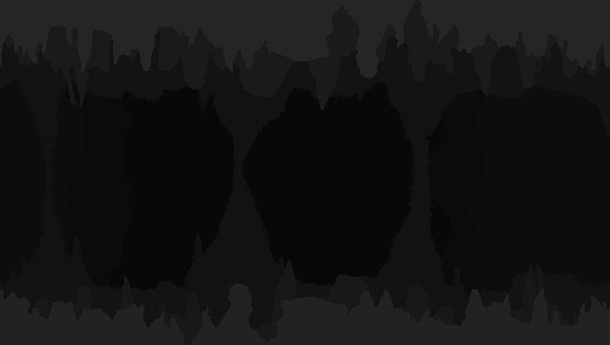

Simplicity Jam : The Last Bloom
Le développement de jeux vidéo est quelque chose pour lequel je porte un certain intérêt depuis quelques années, mais je ne me suis jamais réellement lancé dans le développement de ceci car je n’estime pas avoir encore l’expérience et le savoir pour. Cependant, je sais dessiner, donc je peux participer à la création d’un jeux vidéo par ce moyen-là.
Dans ce projet perso, réalisé dans une petite équipe, j’ai pencore une fois réalisé les images du fond du jeu. J’ai dû réfléchir à comment la faire évoluer pour qu’elle colle avec l’ambiance du jeu. D'autant plus, que le jeu à une dimension importante qui est basé sur les ténèbres et la lumière, donc il faut prévoir ce point là.
Nous n'avons malheuresement pas pu finir le jeu à temps, mais nous avons réussi à faire une version "Beta", très courte, qui reprend les mécaniques.
Dans ce projet, j’ai appris à gérer mon temps de travail, à respecter dates de rendus.
Lien pour tester le jeu


Logiciels utilisés
Compétences employées
- Réfléxion
- Dessins
- Pixel art